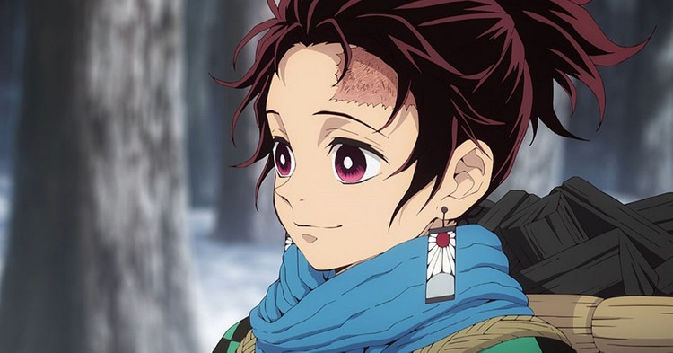
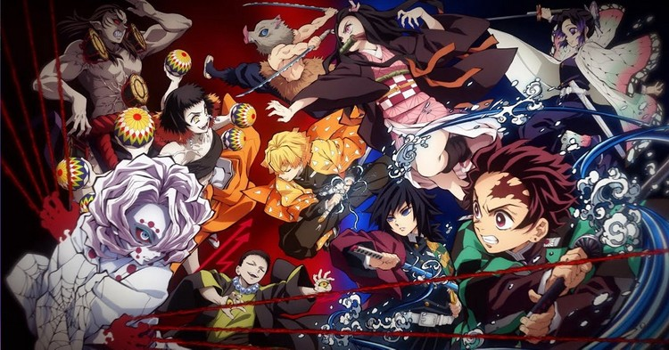
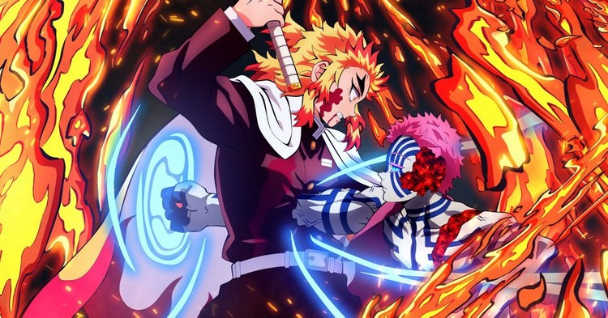
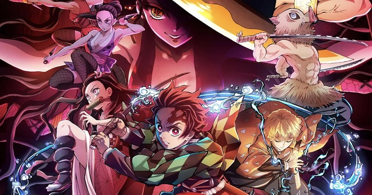

KIMETSU NO YAIBA TEMPORADA 2:TUDO QUE VOCÊ PRECISA RELEMBRAR ANTES DELA COMEÇAR
Acontecimentos que você precisa relembrar para aproveitar a segunda temporada.
POR: FLÁViA PEDRO


⚠ ATENÇÃO:ALERTA DE SPOILERS! ⚠
Kimetsu no Yaiba teve sua estreia em 2019 no Japão e virou uma febre mundial ao misturar mitologia sobrenatural, fatos históricos e muita ação. Além de desenvolver seu enredo de modo cativante,Demon Slayer ainda surpreendeu ao entregar um visual muito rico, repleto de cores e efeitos especias que constroem uma identidade visual própria.
Vamos relembrar os principais acontecimentos que movimentaram a primeira temporada para nos prepararmos para a estreia da segunda temporada, no próximo dia 10 de outubro.
- Como começa a Historia?
- O que acontece na primeira temporada de Kimetsu no Yaiba?
- O que acontece em Demon Slayer-Mugen Train: O Filme?
- O que acontece entre o filme e a segunda temporada de Kimetsu no Yaiba?
VEJA TAMBÉM :
Como Começa A históra?
O gentil Tanjirou é o protagonista do anime
Sua história se passa no Japão entre os anos de 1912 e 1926,período em que o imperador Taisho reinava.Tudo comça após um jovem chamado Tanjiro Kamado encontrar sua família morta ao voltar da cidade onde vendia carvão.
Ao tentar salvar sua irma Nezuko , a única sobrevivente do massacre de sua família,percebe que há algo errado com eka: a garota foi transformada em um Oni.Nesse momento Giyu Tomioka aparece disposta a eliminar a menina. Afinal, a jovem se transformou em um demônio e como um dos Hashiras, os espadachins de mais alto nível da milícia dos Caçadores de Onis,este é seu dever.
Mas após perceber que Nezuko ainda matinha sentimentos e laços humanos, fortes o suficiente para proteger seu irmão,Tomioka a deixa viver. Ele indica que Tanjiro procure um mestre chamado Sakonji Urokodaki para que ele começe seu treinamento. Assim,o jovem conseguiria não só matar Onis - evitando que a desgraça que atingiu sua família ocorresse com outras - mas também encontrar informações que levassem ao assassino de sua família.
Tanjiro rapidamente passa pelos testes de seu mestre. Depois de um período de dois anos de treinamento em que domina a Respiração da Água, ele é aprovado para fazer parte da Demon Slayer Corps, uma organização responsável por matar Onis não reconhecida pelo governo. É assim que as aventuras do Tanjiro começam e o jovem, junto com sua irmã, enfrenta diversos Onis poderosos.
O que acontece na primeira temporada de Kimetsu no Yaiba?
Imagens com uma parte do elenco da primeira temporada do anime
Após derrotar um desses Onis,Tanjiro consegue o nome do responsável pelo assassinato de sua família: Muzan Kibutsuji, o primeiro de sua espécie, o progenitor de todos os outros Onis.
Tanjiro encontra em sua jornada dosi jovens caçadores que o acompanham em sua trajetória: o medroso Zenitsu , com sua Respiração do Trovão,e o rabugento com caveça de javali, Inosuke , com sua Respiração da Besta. Os amigos passam por inúmeras batalhas, tanto individuais, quanto em grupo, vencendo desdo o Oni dos tambores á família de Onis aranha, onde enfrentam sua luta mais difícil ate o momento.
Nesses embates, Tanjiro enfrenta alguns dos Onis mais fortes criados por Muzan: os integrantes das Seis Luas Inferiores de número 5 e o de número 3. Nesta batalha, contra a Lua Inferior 5, o garoto desperta uma nova respiração chamada de Respiração do Sol, algo que lembrou de sua infância, que seu pai fazia em forma de dança.
É depois dessa luta que a existência de Nezuko chega ao conhecimento dos Pilares (os 9 Hashiras, grupo o qual o Tomioka faz parte). E como caçadores de Onis, todos querem que a garota seja morta, apesar dos esforços de Tanjiro em proteger sua irmã. Mas por incrível que pareça, o mestre dos Hashiras, Kagaya Ubuyashiki, se posiciona contra a escolha da maioria e decide permitir que Nezuko e Tanjiro fiquem vivos até segunda ordem. A decisão traz indignação entre os Pilares, porém todos acatam a decisão.
Em seguida, Tanjiro, Zenitsu e Inosuke precisam se recuperar dos ferimentos causados na última luta e, junto com a recuperação, iniciam um treinamento para obter uma técnica poderosa, a Respiração de Concentração Total. Essa respiração aumenta o poder e a força dos guerreiros que conseguem realiza-la.
Após sua recuperação total e fim do treinamento, os três jovens partem em sua nova jornada no trem Mugen, o que dá início ao Demon Slayer – Mugen Train: O Filme. Além de irem atrás de um poderoso demônio que está matando caçadores, os jovens contam com a companhia de um dos Hashiras, o Rengoku. Nesta viagem, Tanjiro também busca entender mais sobre a Respiração do Sol, contando com a ajuda do Hashira do Fogo.
O que acontece em Demon Slayer - Mugen Train: O Filme?
Rengoku, Hashira do fogo vs Akaza
O filme começa imediatamente após os acontecimentos do anime, a partir do momento em que o grupo de amigos embarca no trem em busca de um demônio que está causando desaparecimentos.
No final da temporada, Muzan estava absolutamente decepcionado com o que restou de seus seguidores, os integrantes das Seis Luas Inferiores. Especialmente tendo em vista que alguns deles fracassaram em suas missões de derrotar Tanjiro e sequestrar Nezuko, e acabaram mortos por integrantes da Demon Slayer Corps.
Assim, o Rei dos Onis decide matar seus próprios guerreiros, eliminando um por um, até que restasse apenas Enmu (Lua Inferior 1). Ele demonstra tamanha devoção que recebe sangue do próprio Muzan, para que adquira mais poder e mate pessoalmente os caçadores de demônios e quem mais estiver em seu caminho.
Demon Slayer – Mugen Train: O Filme acompanha precisamente a tentativa desesperada de Enmu de impressionar seu chefe. Ele é um Oni que controla os sonhos, deixando suas vítimas em um sono profundo incapaz de acordarem, ou assim o mesmo pensava.
Ele coloca todos do trem em um sono pesado, tendo sonhos felizes. Mas Tanjiro, com ajuda de uma visão de seu pai, consegue acordar. Tudo que ele teve que fazer tirar sua própria vida dentro do mundo do sonho. Ao mesmo tempo, vemos Nezuko usando suas habilidades para cortar a conexão criada pelo Oni, acondando os passageiros. Assim, uma batalha começa a ser travada dentro do trem entre Tanjiro e Enmu.
Mesmo ao ser decapitado, o sobrevivente final dos Lua Inferiores não morre e funde sua cabeça ao trem. Após seus companheiros acordarem, graças aos esforços de Nezuko, Rengoku estabelece um plano que divide os jovens em dois grupos: Inosuke e Tanjiro procuram o pescoço do demônio ao longo do trem, enquanto ele, Zenitsu e Nezuko ficam para trás, defendendo os passageiros.
Dessa forma, Tanjiro e Inosuke encontram o pescoço de Enmu na casa de máquinas e Tanjiro corta o aterrorizante Oni, parando o trem e enfim matando o demônio.
Porém, quando tudo parece estar indo bem, o Lua Superior 3, Akaza, aparece de repente. Rengoku é morto após lutar sozinho contra um dos demônios mais fortes de Muzan, mas vendo que o sol estava prestes a nascer, a Lua Inferior foge. Neste universo, os raios solares são fatais para os demônios. E com esse triste fim, o filme se encerra.
O que acontece entre o filme e segunda temporada de Kimetsu no Yaiba?
A história só vai prosseguir em dezembro
Inicialmente, haviam dúvidas sobre como aconteceria a conexão entre o filme e o início da próxima temporada, levando em conta que sua trama continua a história da primeira e antecede os acontecimentos da segunda temporada do anime. Mas segundo informações do Hyperbeast, os sete primeiros capítulos da nova temporada irão se dedicar a resumir este arco do trem, para que até aqueles que não assistiram o filme não tenham maiores problemas em acompanhar a trama.
Para que os fãs mais dedicados não percam tempo apenas revendo cenas antigas, a Funimation prometeu que teremos pelo menos 70 trechos inéditos ao longo dos episódios, com músicas novas e uma abertura especial.
O prosseguimento da história, adaptando novos arcos do mangá, só vai começar propriamente no dia 5 de dezembro. Toda a espera vai ser recompensada com um episódio especial de uma hora de duração. A maneira perfeita para começar com o pé direito o aguardado novo arco do anime.
Demon Slayer: Kimetsu no Yaiba está disponível na Netflix, Crunchyroll e Funimation.